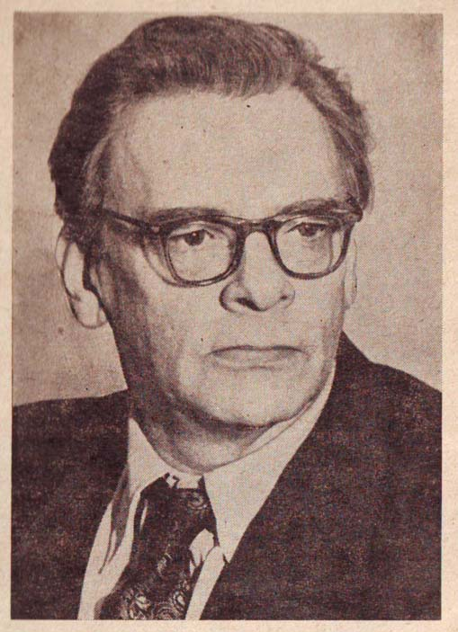
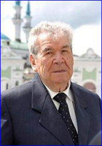

Перейти к содержанию
Уфа литературная
Информационно-краеведческий путеводитель
О проекте
Персоналии
Памятные места
Читальный зал
Фотогалерея
Видеокопилка
Конкурсы и награды
Легенды
О проекте
/ Видеокопилка
Видеокопилка
Аксаков Сергей Тимофеевич
4 видеозаписи

Злобин Степан Павлович
7 видеозаписей

Мустай Карим
14 видеозаписей
 Аксаков Сергей Тимофеевич4 видеозаписи
Аксаков Сергей Тимофеевич4 видеозаписи